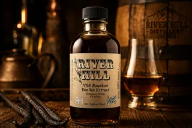
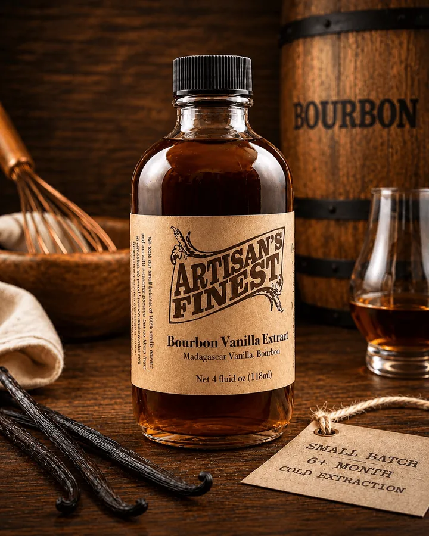
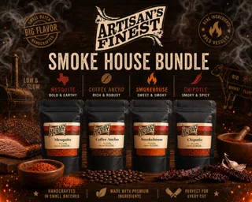
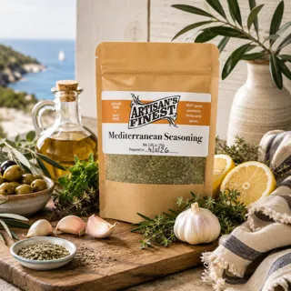
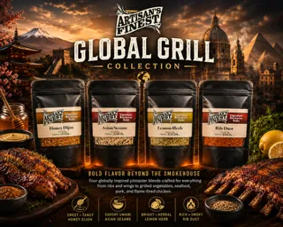

Extracts
Rich pantry staples for baking, drinks, desserts, and gifting.
Small-batch Virginia pantry goods
Extracts, seasoning blends, BBQ rubs, and giftable staples made for generous home cooking, weekend grilling, and thoughtful kitchen gifts.

Each batch is built around dependable flavor: warm vanilla, grill-ready spice, seafood-friendly seasoning, and blends that make weeknight meals feel a little more cared for.

Rich pantry staples for baking, drinks, desserts, and gifting.

Balanced smoke, heat, and sweetness for ribs, chicken, pork, and vegetables.

Flexible blends for seafood, tacos, roasted vegetables, and global grilling.
Fresh, practical, giftable
Artisan's Finest is made for cooks who want flavor that feels special without making dinner complicated.

From our table to yours
Notes from cooks, grillers, and gift-givers across the Shenandoah Valley and beyond.